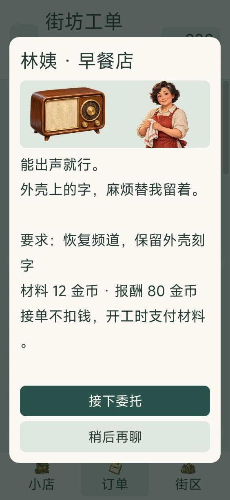
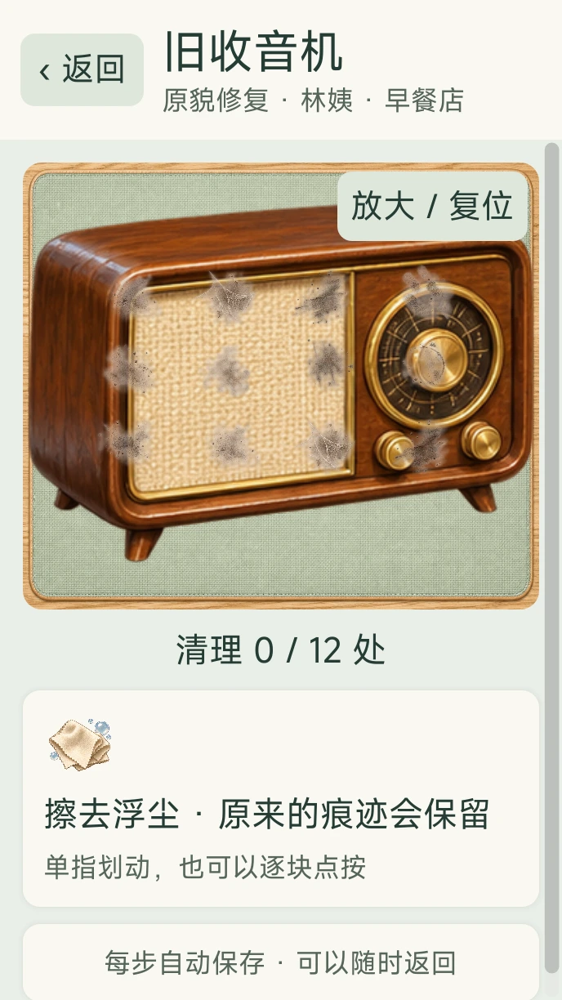
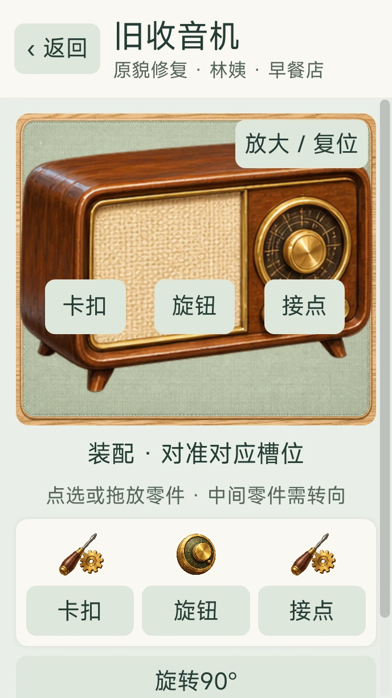

竖屏模拟经营 · 个人 AI 游戏实践
南街修物志.
在南街开一家修复小店。跟着街坊的委托清理、装配和调试旧物，靠修复收入经营店铺，也慢慢拼起街坊们的故事。

12 件旧物 · 9 份委托 · 3 位街坊
第一单，帮林姨修好收音机
林姨想找回熟悉的广播频道，也想保住收音机外壳的刻字。我用首单教会玩家清理、装配和调试。等到交付时，报酬进账，旧物也带出一段街坊往事。
- 接下工单，确认客户要求和材料费
- 擦掉浮尘，装好零件，把信号调到稳定区间
- 确认交付，收下报酬并记录旧物线索
TapTap 制造 Windows Runtime 实录，竖屏操作，约 34 秒，无声。
把「修好」拆成看得懂的操作
首单用一件物品串起四个反馈。工单告诉玩家目标，清理进度确认手势生效，槽位和方向提示帮助找对零件，最后用稳定区间明确调试何时完成。




让每次修复都回到小店经营
街坊委托推进故事，市场收购给玩家经营选择。购买旧物前可以对照收购价、材料费和预计收益，修好后可销售或陈列。新工位和助手承接经营成长，助手分担清理，关键的装配和调试仍由玩家完成。


从玩法规则到可验证的手机版
我用 AI 辅助把已有玩法迁移到 TapTap 制造，按规则、存档和竖屏交互拆分工作。为了让玩家在碎片时间也能修完一件旧物，我把首单从接单到到账、中途退出后续修、保存失败后重试列为验收场景。
TapTap 制造版本已完成官方构建。页面展示该项目的原生运行截图与录屏，图中人物为游戏角色。